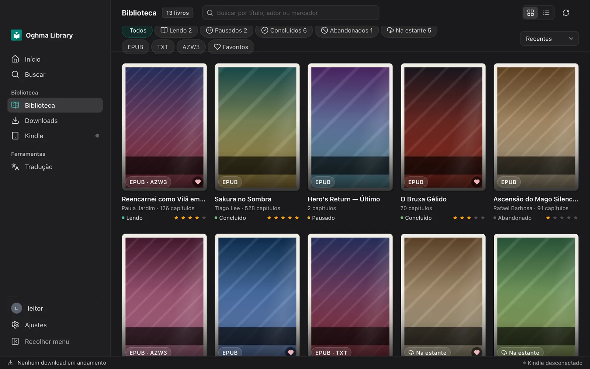
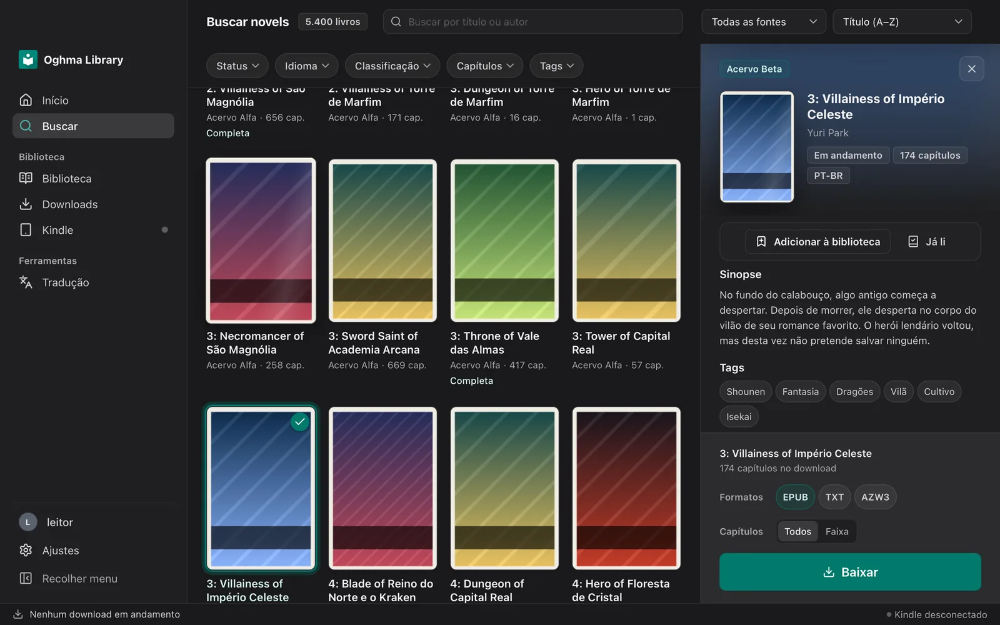
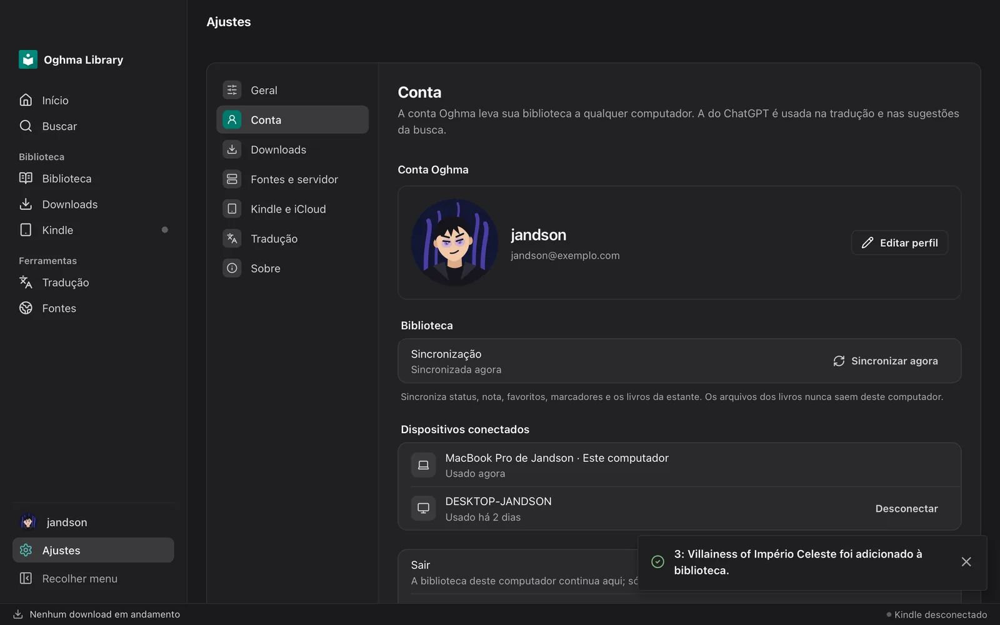

Busca em várias fontes
Um catálogo único com filtros de gênero, status e capítulos, e sugestões de obras parecidas.
Busque em várias fontes, baixe em EPUB ou AZW3, organize a estante com status e nota e mande para o Kindle. Tudo num app só, no Mac e no Windows.

Um catálogo único com filtros de gênero, status e capítulos, e sugestões de obras parecidas.
Lendo, pausado, concluído, abandonado. Dê estrelas e guarde livros na estante sem baixar.
Entre com o e-mail e sua biblioteca, notas e status aparecem no Mac e no Windows.
Converte para AZW3 e envia pelo cabo ou por Wi-Fi. No Mac, salva direto no iCloud Drive.
Quando sai uma versão nova, um botão aparece no app. Um clique e pronto.
Visual limpo, rápido e pensado para longas sessões de leitura e organização.


O Oghma ainda não tem assinatura de desenvolvedor da Apple nem da Microsoft, então o sistema pede uma confirmação na primeira vez. Depois disso abre normalmente, e as atualizações chegam sozinhas.
Precisa de um Mac com Apple Silicon (M1 ou mais novo).
Baixar para MacWindows 10 ou 11, 64 bits.
Baixar para Windows